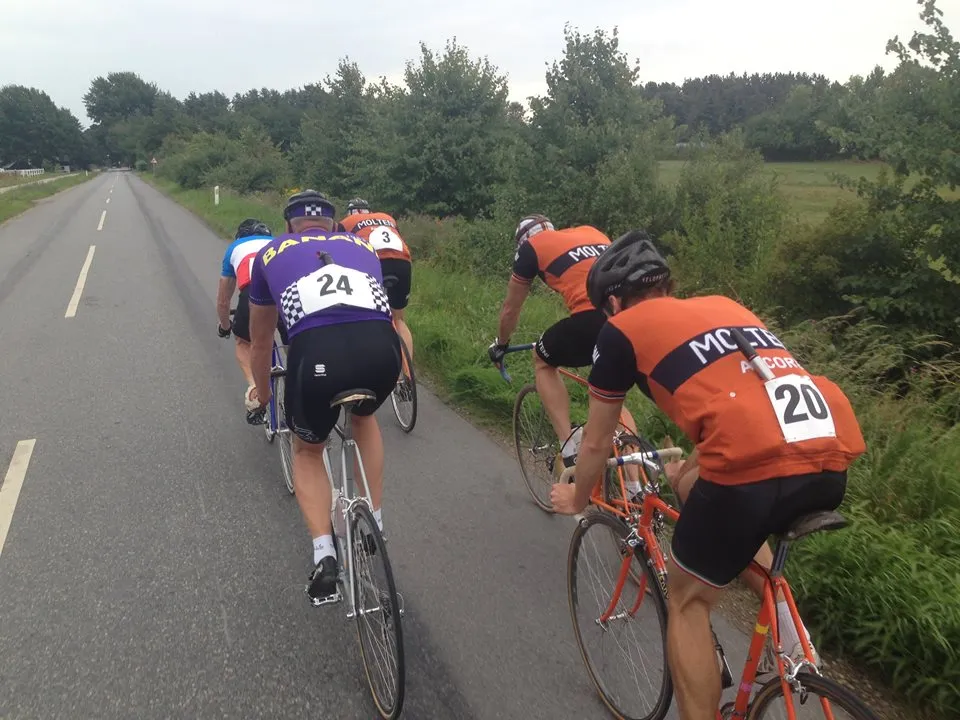
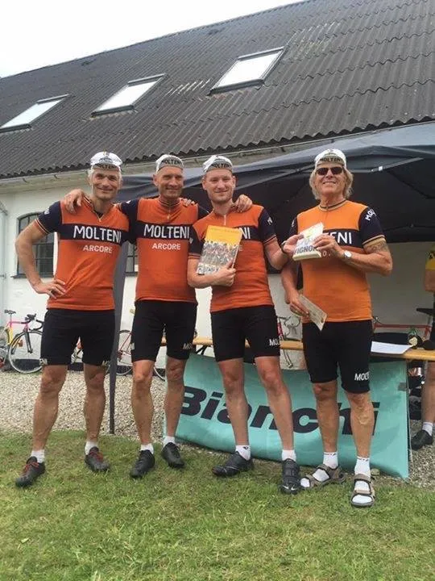

Kroppedal Grand Prix 2016: Forgæves lobbyarbejde

Squadra Molteni kørte lørdag eftermiddag Kroppedal Grand Prix sammen med et helt felt af 60 vintage-cykler og retro-ryttere.
Det blev et løb fyldt med drama, angreb, gruspavéer og nogen f****** hurtige konkurrenter.
Orlando Gay Muscle Oil
Efter en grålig formiddag, lysnede det over Taastrup, da team bilen trillede ind på parkeringspladsen ved Kroppedal Museum. Her samledes holdets fem ryttere Niels, Grane, Finn, Kasper og Jacob over taktiske overvejelser, alt imens benmullerne blev smurt ind i Orlando Gay Muscle Oil.
Kroppedal Grand Prix køres på en rundstrækning af 37 kilometer, som kan passeres enten 1 eller 2 gange (som Squadra Molteni selvfølgelig var på). En fantastisk rute, anlagt af Henrik Seidenfaden, og heftigt inspireret af VM-ruten fra 1956, som blev kørt på de samme veje.
Forgæves lobbyarbejde
Starten gik kl. 11 præcis, men trods intensivt lobbyarbejde før starten, lykkedes det ikke at overbevise konkurrenterne om at tage første omgang med ro. På første pavé grusstykke, efter et par kilometer, bliver tempoet skruet i vejret, og første udskilning er en realitet. Jakob, Grane, Niels og Kasper kommer med i første gruppe sammen med ca. 10 andre ryttere.
Fuldstændig forgæves forsøger holdet rytteres at sætte tempoet ned, når de rammer fronten. Men det vil hverken Team Christiania, Del Tongo, Team K-Werk eller Mark-med-Eddy-Merckx-cyklen være med til.

Skiltetyve og drengestreger – og hurtige Seidenfaden
Med 18 kilometer tilbagelagt, kører frontgruppen ind på opløbsstrækningen for første gang. Hmm.? Omgangen skulle have været 37 kilometer, men skiltetyve og drengestreger var skyld i at alle kørte forkert på første omgang, som blev noget kortere. Men Henrik Seidenfaden var hurtig, og fik rettet op på fejlen til anden omgang.
Opløbet består af en lang gruspavé, og på den afsluttende bakke, på første passage, træder Del Tongo-Jack på pedalen, og forcere endnu en udskilning. Denne gang sammen med Jens fra Team Christiania (sidste års vinder), Eddy-Merckx-Mark og Kasper fra Squadra Molteni.
Niels er kun 15-20 meter fra at komme op, men må lade sig falde tilbage til en forfølgergruppe. Her sidder han med tre andre ryttere Jeppe fra Team Puch, Jørn fra Kraftwerk, og Jesper fra Banani.
Eddy Merckx-Mark
I frontgruppen bliver der kørt rigtig rigtig stærkt. Og som var som var det Arenberg-skoven i Paris-Roubaix han kørte ind på, indledte Eddy Merckx-Mark den tidlige gruspavé på anden omgang i et heftigt tempo.
Kort efter, med 35 km. til mål, tager Team Christiana-Jens over, og igennem Sengeløse trykker han en 2,5 km. dingerføring af med 42+ km./t. Den kan også have været længere, men Kasper eksploderer, og bliver sat rent fra hjul.
De tre resterende må afgøre det mellem sig, og her var Eddy Merckx-Mark stærkest, og Squadra Molteni har selvfølgelig allerede sendt et konktraktudspil.
I mellemtiden er Jacob, pga. hans hverv som dommer, stået af efter første omgang. Finn og Grane ligger efter Niels’ gruppe. Her er alt splittet til atomer, og de må køre sidste omgang solo. En hård omgang i et vindblæst sjællandsk landskab.
I forfølgergruppen bliver fire til tre, da Jeppe fra Puch må slippe. Der er stadig godt samarbejde.
Klassisk Molteni-fælde
Efter Kasper bliver sat fra frontgruppen tager han en dyb indånding, og beslutter sig for at fortsætte alene på mellemhånd. Med godt 20 kilometer til mål kan forfølgergruppen ane Kasper længere fremme.
De næste 15 kilometer er det katten efter musen. Kasper holder flot stand, og forspringet svinger konstant mellem 10 og 30 sekunder. Med 3 kilometer til mål kommer en bil desværre lidt i vejen, og Kasper bliver indhentet.
Kasper snakker hurtigt med Niels, og aftalte en klassisk Molteni-fælde; da de fire drejer ind på den sidste gruspavé, med 2 kilometer til mål, kører Kasper væk igen. Niels lader taktisk de to andre arbejde, og med 500 meter igen, lancerer han sit angreb.
Kasper kommer først ind på den 300 meter lange opløbsbakke, han taber desværre kæden, men får den hurtigt på, og udnytter de sidste kræfter til at køre et kort lead-out for Niels, som tager en flot og sikker 4. plads. Kasper må nøjes med 6. pladsen og ømme lunger.
Epilog: Pavéer og ildsjæle

Grane og Finn kæmper sig på heroisk vis stort set alene igennem anden omgang, og kommer fornemt igennem.
Selvom sejren ikke kom i hus på gruspavéerne, så kom der en trøstepræmie i form af førstepladsen i holdkonkurrencen.
Kroppedal Grand Prix er et af kun meget få retro-cykelløb i Danmark. Inklusiv hygge, grilmad, fantastiske øl, kage og Jolly Cola. Løbet er fantastisk veludført og en fornøjelse at være med til. Ruten tilgodeser både dem som gerne vil køre hurtigt, og dem som gerne vil nyde naturen og selskabet undervejs.
Omdrejningspunktet for alle er en kærlighed for cykelsportens historie og håndværk. Alt sammen gennemført og udført af Cykeldanmarks hyggeligste ildsjæle.
Squadra Molteni siger tak og på gensyn.